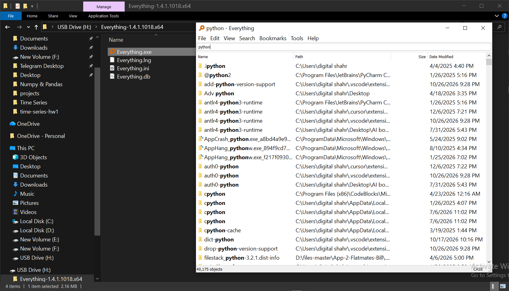
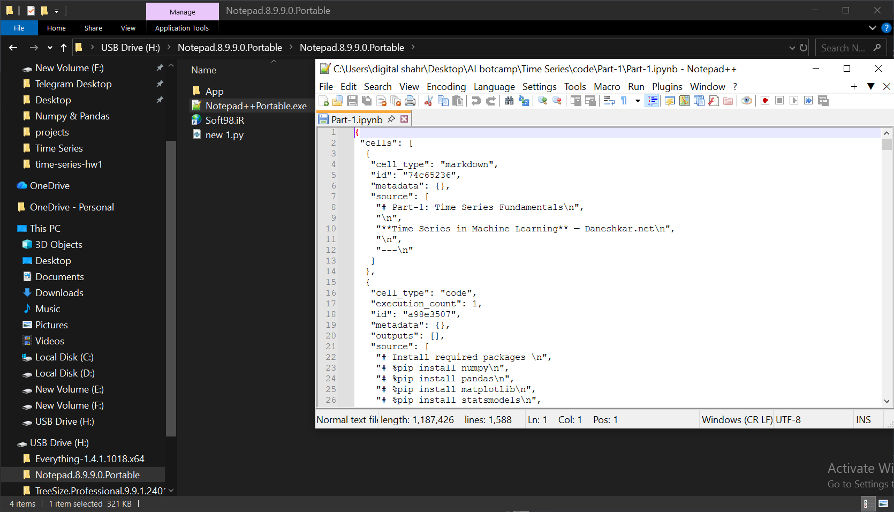
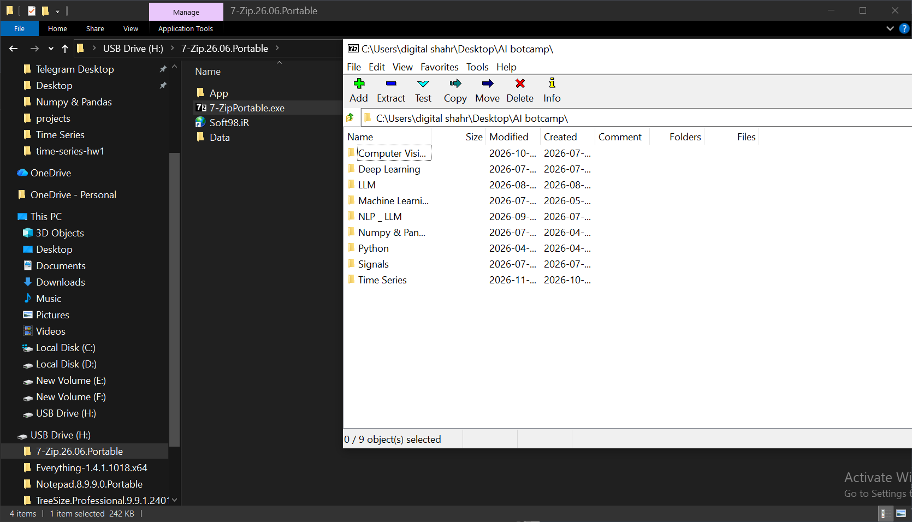

ساخت جعبهابزار نرمافزاری
Portable IT Toolkit — معرفی و آمادهسازی حداقل پنج ابزار قابلحمل برای کارهای IT.
01 / هدف مأموریت
هدف این پروژه ساخت یک جعبهابزار قابلحمل روی فلش مموری است که ابزارهای پرکاربرد پشتیبانی IT را بدون نیاز به نصب و بدون ایجاد تغییر در سیستم میزبان اجرا کند. این ابزارها در جستوجوی فایل، بررسی فضای دیسک، ویرایش متن و تصویر، فشردهسازی، ضبط صفحه و پخش رسانه کاربرد دارند.
مسئلهٔ بررسیشده این است که چگونه میتوان یک مجموعه ابزار کامل را روی یک فلش داشت و روی سیستمهای مختلف، بهسرعت و با حداقل رد پا اجرا کرد. خروجی مورد انتظار یک فلش منظم با 5 ابزار آمادهٔ اجرا، همراه با مستندات و تست روی سیستم دوم است.
02 / ابزارها و محیط اجرا
| ابزار | کاربرد | دسته |
|---|---|---|
| Everything | جستوجوی آنی فایلها و پوشهها روی دیسکهای NTFS | مدیریت فایل |
| TreeSize | نمایش حجم پوشهها و یافتن فایلها و پوشههای پرحجم | تحلیل فضای دیسک |
| Notepad++ | ویرایشگر متن و کد با پشتیبانی از زبانهای مختلف | ویرایش متن |
| 7-Zip | فشردهسازی و استخراج فرمتهای مختلف آرشیو | ابزار فایل |
| VLC | پخشکنندهٔ چندفرمتی صوت و تصویر | چندرسانهای |
محیط اجرا: مدل و ظرفیت فلش: 16GB-v813 · فایلسیستم: · سیستمعامل آزمایشی: Windows 10
نکتهٔ فایلسیستم: FAT32 فایل بزرگتر از ۴ گیگابایت را نمیپذیرد. برای ضبطهای OBS و فلشهای بزرگ، exFAT یا NTFS مناسبتر است.
03 / مراحل انجام کار
- فرمت فلش با فایلسیستم مناسب و نامگذاری، مثلاً
ToolKit. - ساخت ساختار پوشهها، یک پوشه جداگانه برای هر ابزار.
- دانلود نسخهٔ پرتابل یا ZIP هر نرمافزار از سایت رسمی سازنده.
- استخراج هر ابزار در پوشهٔ مخصوص خودش.
- فعالسازی حالت پرتابل در برنامههایی که نیاز دارند. برای مثال در OBS با ساخت فایل خالی
portable_mode.txtکنار فایل اجرایی، تنظیمات روی خود فلش ذخیره میشود. - (اختیاری) ساخت یک لانچر ساده با فایل batch که برنامهها را با مسیر نسبی باز کند.
- تست اجرا روی سیستم دیگر و بررسی اینکه تنظیمات روی فلش باقی میماند.
04 / شواهد و تصاویر اجرا




05 / یافتهها و تحلیل فنی
| ابزار | حجم روی فلش | نیاز به Admin | ماندگاری تنظیمات روی فلش |
|---|---|---|---|
| Everything | 3MB | برای ایندکس NTFS یا باید سرویس Everything نصب باشد یا برنامه با Admin اجرا شود | نسخهٔ ZIP تنظیمات را محلی نگه میدارد |
| TreeSize | 300MB | بدون Admin اجرا میشود؛ برای محاسبهٔ حجم همهٔ پوشهها باید با Admin اجرا شود | نسخه zip تنظیمات محلی را نگه می دارد |
| Notepad++ | 40MB | نیازی به دسترسی ادمین ندارد | محلی،در پوشه برنامه |
| 7-Zip | 3.5MB | نیازی به دسترسی ادمین ندارد | محلی، در پوشه برنامه |
| VLC | 380MB | نیازی به دسترسی ادمین ندارد | با ساخت زیرپوشهٔ portable کنار برنامه |
نکات تحلیلی:
- سرعت اجرا به نوع USB و سرعت خواندن و نوشتن فلش وابسته است. برنامههای سنگینتر مثل OBS و Paint.NET از فلش کندتر بالا میآیند.
- دسترسی Administrator: ابزارهایی مانند Everything و TreeSize برای اسکن کامل دیسک دسترسی بالاتر میخواهند و بدون آن نتیجه ممکن است ناقص یا کندتر باشد.
- رد پا روی سیستم میزبان: برنامههای پرتابل واقعی تنظیمات را کنار خودشان نگه میدارند، ولی بعضی ممکن است فایل موقت یا ورودی Recent در سیستم میزبان بگذارند.
- وابستگیها: بعضی برنامهها به runtime هایی مثل Visual C++ یا .NET روی سیستم میزبان نیاز دارند و این با «بدون نصب» بودن کامل در تضاد است.
- مصرف فضا: OBS و VLC بخش عمدهٔ حجم را میگیرند. حجم کل جعبهابزار را با ظرفیت فلش مقایسه کن.
06 / مشکلات و راهحلها
| مشکل | راهحل |
|---|---|
| هشدار SmartScreen یا آنتیویروس برای فایلهای دانلودی | دانلود فقط از سایت رسمی و بررسی امضای دیجیتال فایل |
| تغییر حرف درایو در سیستمهای مختلف | استفاده از مسیر نسبی در لانچر بهجای مسیر ثابت |
| ذخیره نشدن تنظیمات OBS روی فلش | فعالسازی حالت پرتابل قبل از اولین اجرا |
| کندی اجرا از فلش | استفاده از USB 3.x یا کپی موقت روی SSD |
| ناقص بودن نتایج Everything و TreeSize | اجرا با Run as Administrator |
| قطع ناگهانی فلش هنگام ضبط | ضبط روی دیسک سیستم، انتقال بعدی به فلش و خروج امن (Eject) |
07 / جمعبندی و آموختهها
- مفهوم نرمافزار پرتابل و تفاوتش با نرمافزار نصبشده، یعنی نگهداری تنظیمات کنار برنامه و نه در رجیستری سیستم.
- اهمیت مسیرهای نسبی و ساختار منظم پوشهها.
- تأثیر فایلسیستم و سرعت USB بر تجربهٔ کاربر.
- ملاحظات امنیتی: دانلود از منبع معتبر، اسکن فلش و احتیاط هنگام اتصال به سیستمهای ناشناس.
- اهمیت تست در محیط واقعی، چون کار کردن روی یک سیستم تضمین کار کردن روی سیستم دیگر نیست.